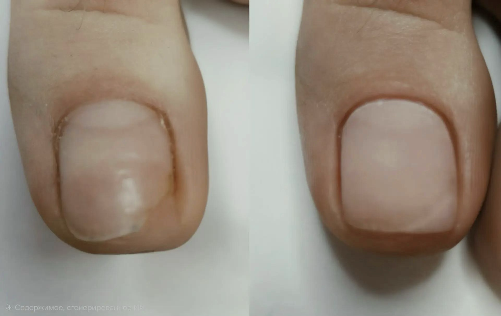
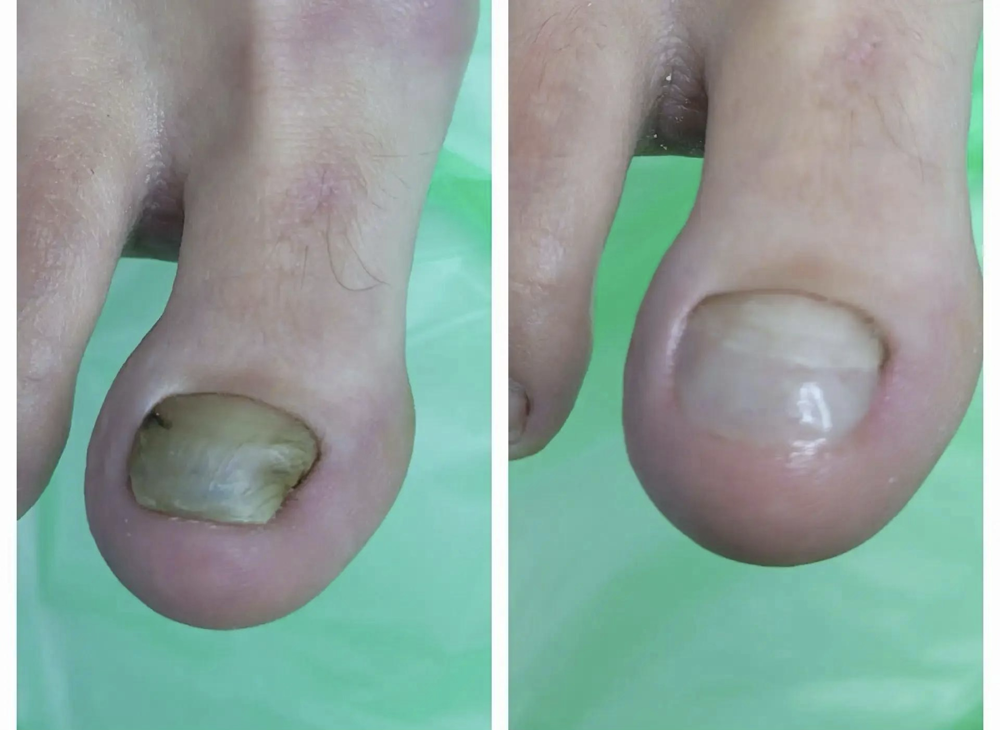

Протезирование ногтевой пластины
Протезирование — это установка протеза, имитирующего ногтевую пластину при её полной или частичной утрате. Это современное решение проблемы повреждения и нарушения роста ногтей.
Такой протез возвращает ногтям эстетичный вид, а также защищает ногтевое ложе от физического воздействия, появления шероховатостей и изменения формы ложа при отсутствии ногтя.
Для каких случаев требуется
Протезирование может понадобиться в следующих случаях:
- последствия грибкового поражения ногтей;
- травма ногтя;
- расщепление, ломкость и расслоение ногтей с разрушением в продольном направлении;
- дистрофия ногтей, отслоение ногтевой пластины с полным или частичным разрушением;
- исправление формы при утолщении и искривлении ногтевой пластины.
Этапы проведения процедуры
- Осмотр и подготовка. Подолог оценивает состояние ногтевого ложа, остатков пластины и кожи. При необходимости берут соскоб на анализ.
- Обработка. Удаляют повреждённые участки и гиперкератоз, проводят антисептическую обработку.
- Подбор материала. В зависимости от задачи выбирают эластичный гель, акриловый композит или готовую пасту.
- Моделирование. Материал наносят тонкими слоями, формируя протез с учётом анатомии пальца и направления роста ногтя.
- Полимеризация. Материал затвердевает под УФ-лампой или с помощью химического активатора.
- Шлифовка и герметизация. Поверхность выравнивают, торец протеза запечатывают, чтобы предотвратить проникновение влаги и микроорганизмов.
Примеры работ


Часто задаваемые вопросы
Чем протезирование отличается от наращивания?
Протезирование решает функциональные задачи: защиту и коррекцию роста, а не только косметическую. Используются эластичные медицинские материалы с пластификаторами, которые не травмируют повреждённое ложе при нагрузке. В салонах применяют более жёсткие составы для наращивания.
Сколько времени занимает восстановление?
Полное восстановление ногтевой пластины занимает примерно 4–6 месяцев. Протез нужно корректировать примерно раз в месяц по мере отрастания собственного ногтя.
Протез мешает росту натурального ногтя?
Правильно выполненный протез не препятствует естественному росту ногтевой пластины. По мере роста собственного ногтя протез постепенно заменяется или корректируется.
Запишитесь на приём
Оставьте заявку — мы свяжемся с вами и подберём удобное время.